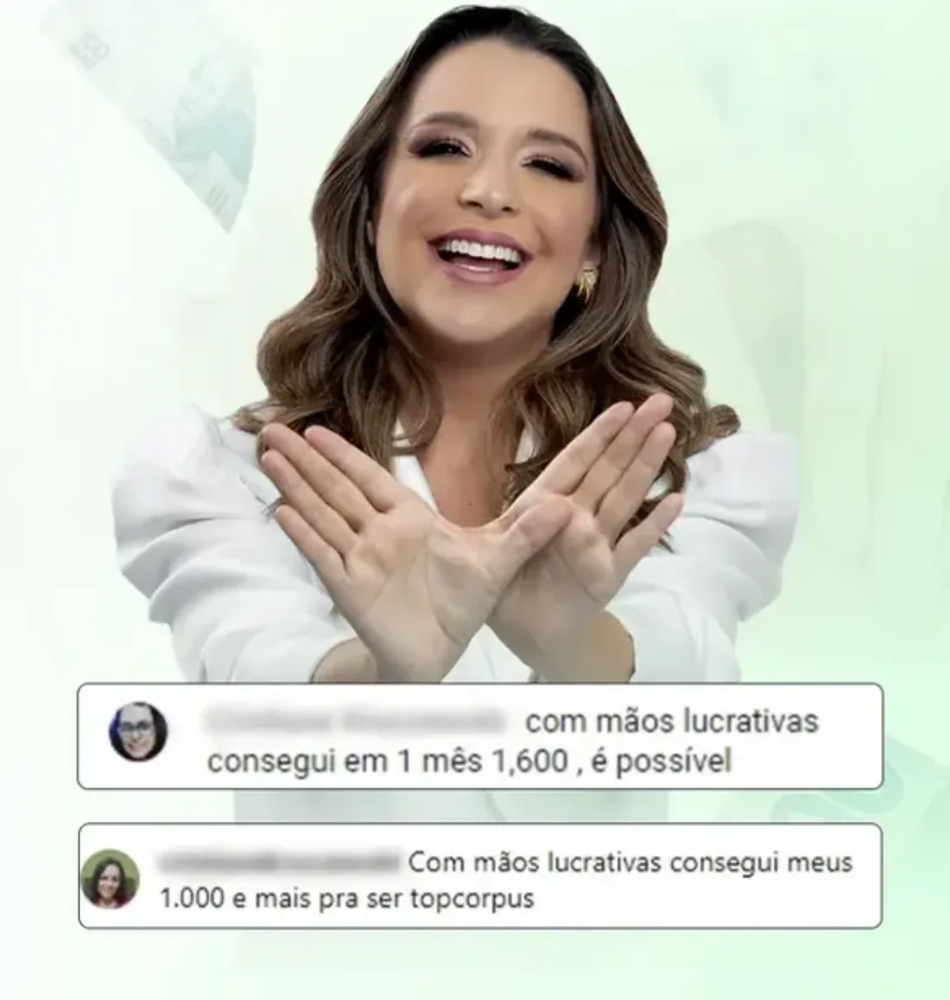
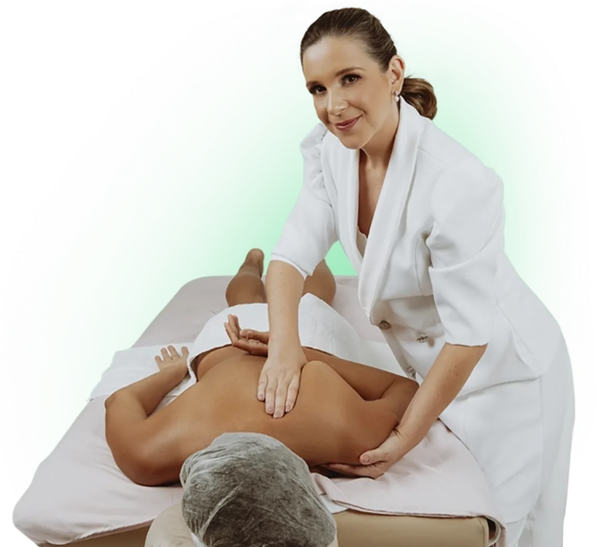
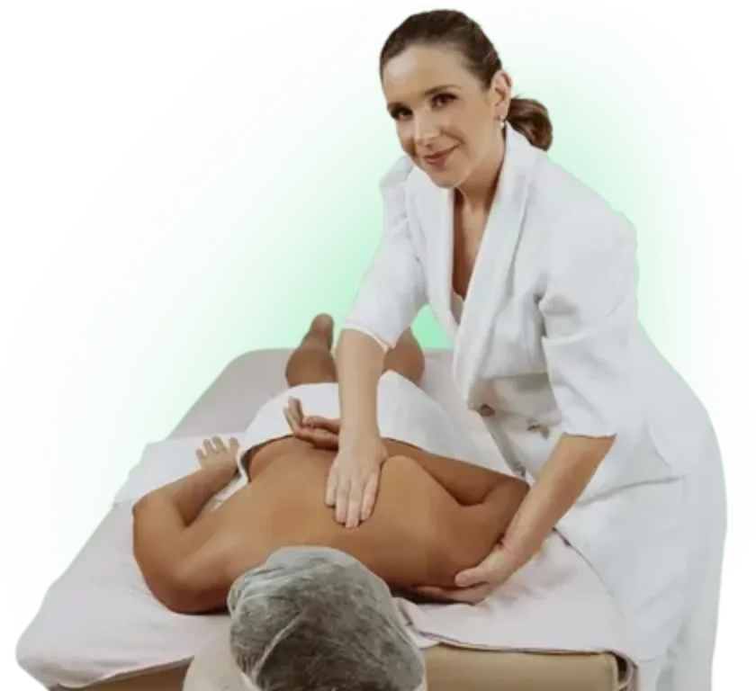
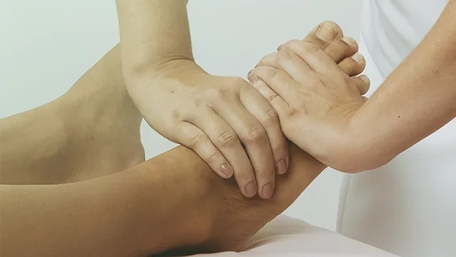
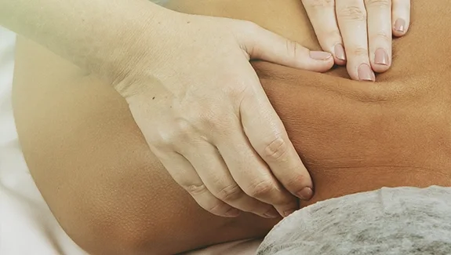
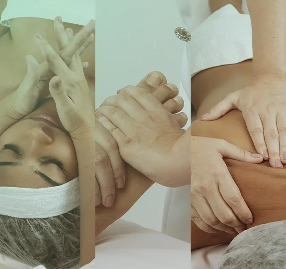
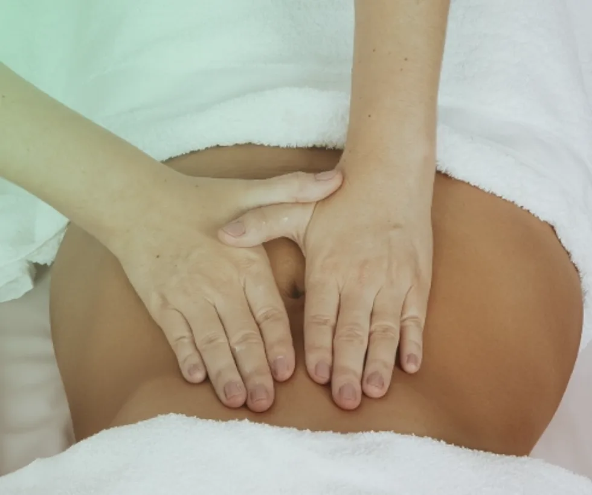
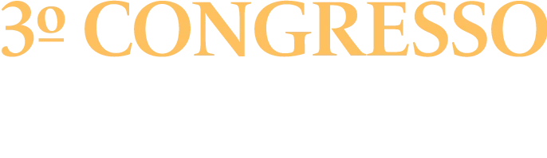
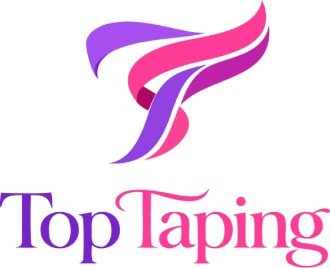

TopFace
Age diretamente em olheiras, papada, bruxismo e sinais de ansiedade. 7 em cada 10 mulheres apresentam esses sintomas e procuram tratamento.
É a técnica que enche a sua agenda.
Trabalhando poucas horas por semana, sem formação, sem equipamento e sem espaço próprio — usando apenas as mãos.

Provavelmente não é isso que você sonhou viver depois dos 40 anos, certo?
Você passou a vida inteira cuidando da sua família, se dedicando aos seus filhos, ajudando as pessoas. Mas e agora, o que sobrou para você, mulher?
E eu não estou falando de dinheiro. Estou falando de dignidade.
Que existe um caminho para você finalmente ser dona da sua própria vida, fazer suas próprias escolhas, ser respeitada pelo que faz, mandar no seu dinheiro e nunca mais depender de ninguém.
É justamente esse caminho que eu quero te mostrar.


A maioria das mulheres pensa que para ganhar dinheiro com massoterapia é preciso dominar dezenas de manobras ou ter uma formação completa. Na verdade, 3 técnicas específicas e fáceis de aprender resolvem 95% dos problemas que as pessoas enfrentam.
Age diretamente em olheiras, papada, bruxismo e sinais de ansiedade. 7 em cada 10 mulheres apresentam esses sintomas e procuram tratamento.
É a técnica que enche a sua agenda.

Resolve dores nas costas, dor de cabeça e estresse a partir de pontos específicos nos pés. A maioria das pessoas convive com alguma dor crônica nessas áreas.
40 minutos de alívio que a cliente sente na hora.

Libera tensões profundas nas costas e na lombar, as que causam hérnias e dores fortes. 8 em cada 10 adultos têm dor nas costas.
Uma sessão equivale a cinco de fisioterapia.
Para aplicar essas 3 técnicas você não precisa de maca profissional, equipamento caro nem sala decorada. Tudo o que você precisa são as suas mãos. Elas podem ser feitas na sua casa ou na casa da cliente, onde vocês duas preferirem.
Para você dominar essas técnicas e faturar no mínimo R$1.000,00 em um mês (ou menos) trabalhando poucas horas por semana, criei um treinamento online prático e direto ao ponto, dividido em três etapas.
Como transformar qualquer ambiente numa experiência de spa, seja na sua casa ou na casa da cliente. Você recebe um roteiro completo do que fazer e de como fazer.

TopFace, TopReflexo e MioTop. Para cada uma, uma aula completa ensinando:
Como vender o seu serviço, para quem oferecer, como oferecer e quanto cobrar.
A quarta técnica, que resolve dores cervicais, tensão facial, ansiedade extrema e estresse. Incluindo ela na sessão você pode cobrar R$50 a mais, chegando a R$200 por atendimento.

O método C3 de captação, passo a passo, com estratégias para abordar pessoas sem parecer vendedora e oferecer o seu serviço mesmo sem experiência.
Um grupo exclusivo de alunas do Mãos Lucrativas para você tirar dúvidas, compartilhar conquistas e trocar experiência com massoterapeutas do Brasil inteiro.
Estas são apenas algumas das minhas mais de 45.000 alunas.
TotalR$ 1.188,00
Calma, mulher! Você não vai precisar investir tudo isso. Eu tenho uma oferta generosa para você — fiz ela porque quero ter certeza de que você vai começar hoje a dar um novo rumo para a sua vida.
Hoje com R$ 991,00 de desconto
De R$ 1.188,00
12x de R$ 19,19
ou R$ 197,00 à vista
Tempo restante desta condição
15min 00seg
Quando o contador zerar, esta condição sai do ar.
Eu realmente te entendo, e por isso vou assumir todo o risco por você.
Vamos fazer um combinado? Faça o Mãos Lucrativas por 15 dias completos, assista às aulas e veja isso acontecer:
Você vai assistir e pensar: “nossa, é mais simples do que eu imaginava”.
Você vai testar as 3 técnicas em alguém da sua família, e essa pessoa vai dizer: “onde você aprendeu isso? Que incrível”.
Você vai conseguir a sua primeira cliente pagante. Quando ela colocar o dinheiro na sua mão, você vai pensar: “isso dá certo”.
Se nada disso acontecer, ou se por qualquer motivo você achar que o Mãos Lucrativas não é para você, eu faço questão de devolver 100% do seu dinheiro, sem burocracia e sem enrolação. Mais de 45.000 mulheres já estão usando o método — por isso eu assumo esse risco por você.
Ou você tem resultado, ou eu devolvo o seu dinheiro.
Fisioterapeuta e fundadora do TopCorpus
Atuo há 20 anos na terapia do toque e me tornei uma das maiores referências do Brasil nessa especialidade. Fundei a Escola TopCorpus, onde já ajudei mais de 60.000 alunas em 60 países a sair do zero até a profissionalização.
O Mãos Lucrativas é o caminho mais curto que eu conheço entre não saber nada de massagem e receber o primeiro pagamento pelas suas mãos.
Preencha os dados abaixo para continuar para o pagamento.



É, e na verdade é melhor você não ter vícios ou técnicas erradas. Minhas melhores alunas são justamente as que começaram do zero: você aprende do jeito certo desde o início, sem precisar desaprender nada.
Não, e essa é a beleza do Mãos Lucrativas. Você pode atender na cama da cliente, no sofá da sua casa ou onde for mais confortável. Eu comecei assim também — meu primeiro atendimento foi na casa da cliente.
O treinamento tem 5 horas e você assiste no seu ritmo. Muitas alunas conseguem a primeira cliente já na primeira semana depois de terminar o curso, usando o método C3 de captação que eu ensino.
Você tem 15 dias para testar tudo sem risco. Assista às aulas, teste as técnicas, use os scripts. Se por qualquer motivo não funcionar para você, eu devolvo 100% do seu dinheiro, sem perguntas.
Claro. Tenho alunas dos 18 aos 70 anos, e mulheres mais maduras têm até uma vantagem: as pessoas tendem a confiar mais em quem tem experiência de vida. Você não precisa de força física, apenas das técnicas certas.
Assim que a sua compra for confirmada, você recebe por e-mail os dados de acesso à plataforma. Pode assistir pelo celular, tablet ou computador, quantas vezes quiser, durante 1 ano.
Tem, e você não vai ficar sozinha nessa jornada. Além das aulas, você entra na nossa comunidade exclusiva no WhatsApp, onde tira dúvidas, compartilha experiências e recebe acompanhamento.